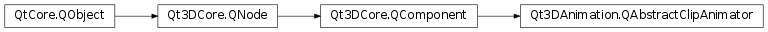

Qt3DAnimation.QAbstractClipAnimator¶
Inherited by: Qt3DAnimation.QBlendedClipAnimator, Qt3DAnimation.QClipAnimator
Synopsis¶
Functions¶
- def
isRunning() - def
loopCount() - def
normalizedTime()
Slots¶
- def
setLoopCount(loops) - def
setNormalizedTime(timeFraction) - def
setRunning(running) - def
start() - def
stop()
Signals¶
- def
loopCountChanged(loops) - def
normalizedTimeChanged(index) - def
runningChanged(running)
Detailed Description¶
QAbstractClipAnimatoris the base class for types providing animation playback capabilities.Subclasses of
QAbstractClipAnimatorcan be aggregated by a QEntity to provide animation capabilities. The animator components provide an interface for controlling the animation (e.g. start, stop). Each animator type requires some form of animation data such as aQAbstractAnimationClipas well as aQChannelMapperwhich describes how the channels in the animation clip should be mapped onto the properties of the objects you wish to animate.The following subclasses are available:
Qt3DAnimation.QClipAnimatorQt3DAnimation.QBlendedClipAnimator
-
class
PySide2.Qt3DAnimation.Qt3DAnimation.QAbstractClipAnimator([parent=nullptr])¶ Parameters: parent – PySide2.Qt3DCore.Qt3DCore::QNode
-
PySide2.Qt3DAnimation.Qt3DAnimation.QAbstractClipAnimator.Loops¶ Holds the number of times the animation should play.
Constant Description Qt3DAnimation.QAbstractClipAnimator.Infinite This will repeat the loop continuously until it is explicitly stopped.
-
PySide2.Qt3DAnimation.Qt3DAnimation.QAbstractClipAnimator.isRunning()¶ Return type: PySide2.QtCore.boolReturns a boolean indicating whether the animation is currently running.
-
PySide2.Qt3DAnimation.Qt3DAnimation.QAbstractClipAnimator.loopCount()¶ Return type: PySide2.QtCore.intReturns the number of times the animation should play.
The value is 1 by default: the animation will play through once and then stop.
If set to
QAbstractClipAnimator.Infinite, the animation will continuously repeat until it is explicitly stopped.See also
PySide2.Qt3DAnimation.Qt3DAnimation::QAbstractClipAnimator.setLoopCount()
-
PySide2.Qt3DAnimation.Qt3DAnimation.QAbstractClipAnimator.loopCountChanged(loops)¶ Parameters: loops – PySide2.QtCore.int
-
PySide2.Qt3DAnimation.Qt3DAnimation.QAbstractClipAnimator.normalizedTime()¶ Return type: PySide2.QtCore.floatSee also
PySide2.Qt3DAnimation.Qt3DAnimation::QAbstractClipAnimator.setNormalizedTime()
-
PySide2.Qt3DAnimation.Qt3DAnimation.QAbstractClipAnimator.normalizedTimeChanged(index)¶ Parameters: index – PySide2.QtCore.float
-
PySide2.Qt3DAnimation.Qt3DAnimation.QAbstractClipAnimator.runningChanged(running)¶ Parameters: running – PySide2.QtCore.bool
-
PySide2.Qt3DAnimation.Qt3DAnimation.QAbstractClipAnimator.setLoopCount(loops)¶ Parameters: loops – PySide2.QtCore.intSee also
PySide2.Qt3DAnimation.Qt3DAnimation::QAbstractClipAnimator.loopCount()
-
PySide2.Qt3DAnimation.Qt3DAnimation.QAbstractClipAnimator.setNormalizedTime(timeFraction)¶ Parameters: timeFraction – PySide2.QtCore.floatSee also
PySide2.Qt3DAnimation.Qt3DAnimation::QAbstractClipAnimator.normalizedTime()
-
PySide2.Qt3DAnimation.Qt3DAnimation.QAbstractClipAnimator.setRunning(running)¶ Parameters: running – PySide2.QtCore.boolSee also
PySide2.Qt3DAnimation.Qt3DAnimation::QAbstractClipAnimator.isRunning()
-
PySide2.Qt3DAnimation.Qt3DAnimation.QAbstractClipAnimator.start()¶ Starts the animation.
-
PySide2.Qt3DAnimation.Qt3DAnimation.QAbstractClipAnimator.stop()¶ Stops the animation.
© 2018 The Qt Company Ltd. Documentation contributions included herein are the copyrights of their respective owners. The documentation provided herein is licensed under the terms of the GNU Free Documentation License version 1.3 as published by the Free Software Foundation. Qt and respective logos are trademarks of The Qt Company Ltd. in Finland and/or other countries worldwide. All other trademarks are property of their respective owners.